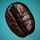
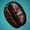

A ridiculously easy-to-use PHP script for resizing images the smart way.
One of the challenges that comes with maintaining a graphic-intensive website like Shifting Pixel is finding a way to get high quality images throughout the site with as little effort as possible. To tackle this, I developed the Smart Image Resizer and have been using it around the site for the past few months. I couldn’t be happier.
The major advantage of this script is that it allows me to resize and crop any image on my website without touching the actual image or writing any code. I upload each image once at a high enough resolution and can then reuse it at any size I want, anywhere I want. It doesn’t matter if the images are in a post, on a page, or in a template file–it just works. All of the magic is done through the query string part of the URL in the src attribute of the img tag.
And, if this wasn’t a big enough time-saver for me right now, it’ll be a huge time-saver the next time I decide to redesign my site. It’s a relief that I won’t have to go through to resize and re-upload a thousand photos to make sure they look right–I’ll just have to change the links to them and I’ll be all set.
Features
- Resizes JPEGs, GIFs, and PNGs
- Intelligently sharpens for crisp photos at any size
- Can crop based on width:height ratios
- Can color-fill transparent GIFs and PNGs
- Built-in caching keeps image variations for optimal performance
Requirements
PHP 5.1.0+ compiled with GD. (You need a version of GD that supports imageconvolution(), such as the bundled version. Note that on some distributions, the default php-gd package may not be adequate.)
Download
Download Smart Image Resizer v1.4.1 (Released August 6, 2008)
Tip jar
To Install
- Unzip on your web server
- In the same directory, create a directory called “imagecache”
- Make your imagecache directory is writable by the web server (usually
chmod 775)
Troubleshooting
- Turn on “display_errors = on” in your php.ini file. Restart Apache and verify with a phpinfo().
- Try visiting the URL that you are using as the
srcattribute of yourimgtag directly in the browser. For example, for example, stick this in your browser’s address bar:http://example.com/image.php?width=180&height=180&image=/path/to/image.jpg. If there is an error message here, it should be quite helpful. - If that doesn’t give you any information, turn on error reporting (add
error_reporting(E_ALL);to the top of image.php) and see if that gives you any information. It is possible that the script is trying to use a function that doesn’t exist in your installation and configuration of PHP. - If you can’t get the script to give you any information, try peaking into your error logs.
- Finally, if you can’t get any information out of any of these things, run a
phpinfo()and send me a link–if I have time I’ll take a look at it and tell you if anything looks out of the ordinary. As of this time, I am spending more time focusing on SLIR 2.
Common error messages
- Fatal error: Call to undefined function imagecreatetruecolor()
- This most likely means that you do not have GD installed. To fix this, install GD (make sure you are using a version that includes the
imageconvolution()function). - Fatal error: Call to undefined function imageconvolution()
- This means that you are using a version of GD that does not include the
imageconvolution()function. To fix this, you will either need to find a repository that includes the version of GD that you need, or compile php-gd from source.
License
I love to hear when my work is being used, so if you decide to use it, feel encouraged to send me an email. Smart Image Resizer is released under a Creative Commons Attribution-Share Alike 3.0 United States license. All I ask is that you include a link back to Shifting Pixel (either this page or shiftingpixel.com), but don’t worry about including a big link on each page if you don’t want to–one will do just nicely. Feel free to contact me to discuss any specifics.
Examples
These examples use my photo of this coffee bean. For more fine photography, browse my “Must See” photos or subscribe.
Resizing a JPEG
<img src="/image.php?width=200&height=200&image=/wp-content/uploads/2008/03/coffee-bean.jpg" alt="Coffee Bean" /> 


Resizing and cropping a JPEG into a square
<img src="/image.php?width=150&height=150&cropratio=1:1&image=/wp-content/uploads/2008/03/coffee-bean.jpg" alt="Coffee Bean" />  



371 Comments
March 3rd, 2008 at 9:45 pm
So is this running the PHP script and resizing the image every time the image is loaded, or is it doing it once and keeping a copy of the image on the server?
March 3rd, 2008 at 9:49 pm
@Elliot: excellent question. If properly set up, it actually resizes the image once and keeps a copy of it on the server in a cache directory. If the source image is newer than the cached image or if any of the parameters change (width, height, cropratio, or color), it makes a new one and re-caches it.
March 4th, 2008 at 2:54 am
Great script! I have just started using it.
Notice: your script sets “Last-modified” header, but doesn’t allow browsers to use their cache.
I have added at line 177 into if($imageModified < $thumbModified) {
these lines of code:
// check browser cache
$gmdate_mod = gmdate("D, d M Y H:i:s", $thumbModified) . " GMT";
if (isset($_SERVER['HTTP_IF_MODIFIED_SINCE'])) {
$if_modified_since = preg_replace('/;.*$/', '', $_SERVER['HTTP_IF_MODIFIED_SINCE']);
if ($if_modified_since >= $gmdate_mod) {
header("HTTP/1.1 304 Not Modified");
exit;
}
}
with this line the script checks the request header of browser about client cache and response "NOT MODIFIED" if the image cached into browser is updated.
March 4th, 2008 at 4:59 am
Cool script – I’ve actually been working on something similar. You’ve given me some ideas for improving my own script as well
One thing I would suggest is checking for the cached file before setting memory limits and doing all the cropping calculations. I think that may help speed things up.
March 4th, 2008 at 6:52 am
@Lorenzo: aha! Silly mistake on my part. Thanks for posting this. I will make the change ASAP.
@Ben: Thanks for the suggestions. I will try some things and include them in the next update for sure.
March 4th, 2008 at 7:00 am
Okay, I made some changes and uploaded it. It does seem to run more smoothly (especially with the browser cache). Thanks for the suggestions, guys!
March 4th, 2008 at 10:55 am
Resize images with this PHP script…
Joe Lencioni over at Shifting Pixel, has written a post about the easy to use image resizing script. It’s a really simple script that you use by specifying the parameters in the src part of the img tag.
The major advantage of this script is that…
March 4th, 2008 at 5:46 pm
Nice Joe, I’m going to have to try this one out. I’m always trying to figure out the right size and uploading too may sizes to the server… anyways, nice ; )
March 7th, 2008 at 10:21 pm
[...] it out here. Via John [...]
March 9th, 2008 at 7:46 am
[...] Smart Image Resizer — Shifting Pixel Related Stuff10 Edit In-Place Ajax Scripts | WebTecker the latest tech, web resources and news.CSS Colors: Take Control Using PHP [...]
March 9th, 2008 at 8:23 am
Great script. This is the marquee feature behind an enterprise product by a company called Scene7 who was bought by Adobe a few months ago.
March 9th, 2008 at 9:28 am
Licence?
March 9th, 2008 at 9:42 am
@Jaap: Good question. Creative Commons Attribution-Share Alike 3.0 United States (my attribution requirements). I will try to make that more apparent.
March 9th, 2008 at 10:28 am
[...] web: http://shiftingpixel.com/2008/03/03/smart-image-resizer/ Share and Enjoy: These icons link to social bookmarking sites where readers can share and [...]
March 9th, 2008 at 1:30 pm
Thanks a lot!
This saved me a lot of time (I had actually started to write something before I found this).
I had to add a replication for the php5 only imageconvolution() to get it to work with php4 (using oscommerce which required too many mods to get it to work on php5).
I know it’s a lot slower, but it works.
March 9th, 2008 at 12:40 pm
[...] придумал довольно несложный скрипт PHP под названием Smart image resizer (хитрый ресайзер), который выдает пользователю [...]
March 9th, 2008 at 3:20 pm
have you seen phpthumb? does pretty much the same as far as i can see…
March 9th, 2008 at 4:48 pm
[...] Smart Image Resizer [...]
March 9th, 2008 at 6:07 pm
[...] Shiftingpixel.com: smart image resizer. PHP-skripti, joka osaa muokata JPEG, GIF ja PNG -kuvien kokoa, sekä terävöittää ja kropata kuvia. Osaa ilmeisesti myös cachettaa tuloksensa. Keksin tälle ainakin muutaman käyttötarkoituksen heti, pitää siis kokeilla. [...]
March 9th, 2008 at 6:13 pm
line 241 near:
…
// Set up the appropriate image handling functions based on the original image’s mime type
switch ($size['mime'])
…
you may want to include:
‘image/pipeg’
‘image/jpeg’
‘image/pjpeg’
‘image/png’
‘image/x-png’
‘image/gif’
March 9th, 2008 at 6:20 pm
[...] PHP Smart Image Resizer (tags: php images resize image script photos tool programming webdev tools) [...]
March 9th, 2008 at 6:21 pm
nice, this is just what I’ve been looking for. thanks!
March 9th, 2008 at 8:24 pm
[...] Shifting Pixel: Smart Image Resizer (tags: php imagemanipulation development images graphics) [...]
March 9th, 2008 at 11:31 pm
[...] Smart Image Resizer — Shifting Pixel A ridiculously easy-to-use PHP script for resizing images the smart way. (tags: webdev php images photo) [...]
March 10th, 2008 at 12:16 pm
How about allowing resizing of external images?
March 10th, 2008 at 9:29 pm
This is great, Joe. Question: can you briefly describe how one can go about manipulating the sharpening algorithm (PHP’s imageconvolution) to adjust it to one’s taste? I find your sharpening matrix to be a bit too aggressive for my taste (i.e. too much sharpening), but I don’t entirely get how to go about adjusting the variables to apply less sharpening.
March 11th, 2008 at 5:01 am
[...] Smart Image Resizer. PHP-скрипт для ресайза картинок. Обещают качественный результат.One of the challenges that comes with maintaining a graphic-intensive website like Shifting Pixel is finding a way to get high quality images throughout the site with as little effort as possible. To tackle this, I developed the Smart Image Resizer and have been using it around the site for the past few months. I couldn’t be happier. [...]
March 14th, 2008 at 2:21 am
Looks good. I bookmarked this for future use
March 14th, 2008 at 3:36 am
Hi Joe. I came across your little wonderful piece of code and I got so enthusiastic about it that I decided to feature it on our blog for the web community, at The Art Company — Feel free to add our link to your “Mentioned Elsewhere” list.
Keep up the good work!
March 14th, 2008 at 3:58 am
Its great post! This script will make my life easier
Thx a lot!
March 14th, 2008 at 5:18 am
Great script – very simple and effective. I’ve used it (after some modifications) with my Symphony site. Works grear and looks great!
March 14th, 2008 at 7:09 am
This looks neat. I will have to test it for real, and I guess that larger websites will need to test it thoroughly for possible performance issues, but the principle is great.
With such a tool, you can upload a large image once, and then just ask for the right format in your templates. Great for news/content sites who use one image in 2-4 different formats (small thumbnail, medium thumbnail, page display, full picture…).
I don’t see a lot of CMSs that offer such image manipulation possibilities. And even when they do, the content producer needs to use the tool in the right way or some things might not work. With Smart Image Resizer, you can fix this at the webdesigner level (in the website’s templates, for instance).
Great timing, by the way. I’ve been working on a project that just needs this. Woot!
March 14th, 2008 at 9:49 am
[...] 进入 Smart Image Resizer [...]
March 14th, 2008 at 10:09 am
[...] Smart Image Resizer è uno script basato su PHP per il ridimensionamento di immagini creato da Joe Lencioni e pubblicato recentemente sul suo blog. [...]
March 14th, 2008 at 10:34 am
[...] Smart Image Resizer — Shifting Pixel [...]
March 15th, 2008 at 5:33 am
doesnt appear to be working for me yet
im running gd and php5
on linux
all i get is the alt tag
dying to try it out!!!
March 15th, 2008 at 7:12 am
[...] Smart image resizer Smart Image Resizer — Shifting Pixel – A ridiculously easy-to-use PHP script for resizing images the smart way [...]
March 16th, 2008 at 3:16 pm
It’s a verry usefulls script, but If I am not mistaken someone can flood your filesystem by creating a lot of diferent images in the cache directory, just by making a script that change the height, width, ratio combineason
March 16th, 2008 at 3:17 pm
[...] Smart Image Resizer – satu script yang mengubah size sesuatu fail image tanpa mengubah size asal sesuatu image. mengunakan script php dan gd library. [...]
March 16th, 2008 at 3:27 pm
[...] PHP için resim ölçülendirme aracı. Bağlantı… [...]
March 16th, 2008 at 5:12 pm
@Eddy Tilmant
.htaccess
RewriteRule ^images/(.*).jpg$ image.php?src=$1 [L]
March 17th, 2008 at 1:59 am
[...] Smart Image Resizer — Shifting Pixel [...]
March 17th, 2008 at 3:05 am
@Zach
It does not avoid to create thousands of files in the cache directory with a simple script
I added it at the beginning of the script:
March 17th, 2008 at 3:06 am
First of all, congratulations for creating a wonderful script! I encountered some difficulties at first but managed to solve them:
1. Note that the image path must be ABSOLUTE. My development is done in a “beta” folder and as such, the image couldn’t display until I switched the path to something like “image.php/test.jpg?width=100&height=100&image=/beta/images/test.jpg”.
2. If you still cannot see an image in the browser – try running the PHP script directly by copying & paste the image string into your browser’s address bar. This should provide some helpful error messages. Eg:
http://www.example.com/beta/image.php/test.jpg?width=100&height=100&image=/beta/images/test.jpg
Lastly – and here’s a suggestion to the developer for future versions – is it possible to specify the image quality? One of my thumbnails degraded very badly even in 100×100, despite its original JPG being saved at 95% quality.
March 17th, 2008 at 8:33 am
[...] Smart Image Resizer – Done in PHP. I’m usually not a fan of activating a script through an image tag: [...]
March 17th, 2008 at 11:52 am
@Eddy Tilman
with your script you could create a 120×1000 when you only want to allow matching dimensions.
i would be even more specific:
March 18th, 2008 at 1:22 pm
Nice looking script!
It might be nice if errors generated an image with the error text, since this script will almost always be used in an img tag and the cause of the error is not clear when you just see a broken image or the alt text.
Also a scale option would be nice, so you can scale the image by a percentage, rather than needing to know the exact proportions of the image and do math to figure out the new width and height.
March 19th, 2008 at 11:33 am
Great script… I would love to see the following feature added to this script.
Make an image (75 x 100) insert into the center of a square image of (100 x 100 white background)… this is just a fine detail issue for my usages, but I am sure alot of people would find that it would be useful.
Great Job on this script!!!! I love it!
March 21st, 2008 at 6:52 pm
Great Script. I have to appose the idea by Joe Harman though. You can do this with CSS / html. We don’t all have white backgrounds on our sites.
March 23rd, 2008 at 1:48 am
[...] A ridiculously easy-to-use PHP script for resizing images the smart way，使用形如@jpg?width=150&height=150&cropratio=1:1&image=/wp-content/uploads/2008/03/coffee-bean.jpg@这样的地址来调用图片。这种方法我曾经用过，坦白说，适用范围很窄。如果同一页面上有多个图片且均通过这种方式处理的话…… [...]